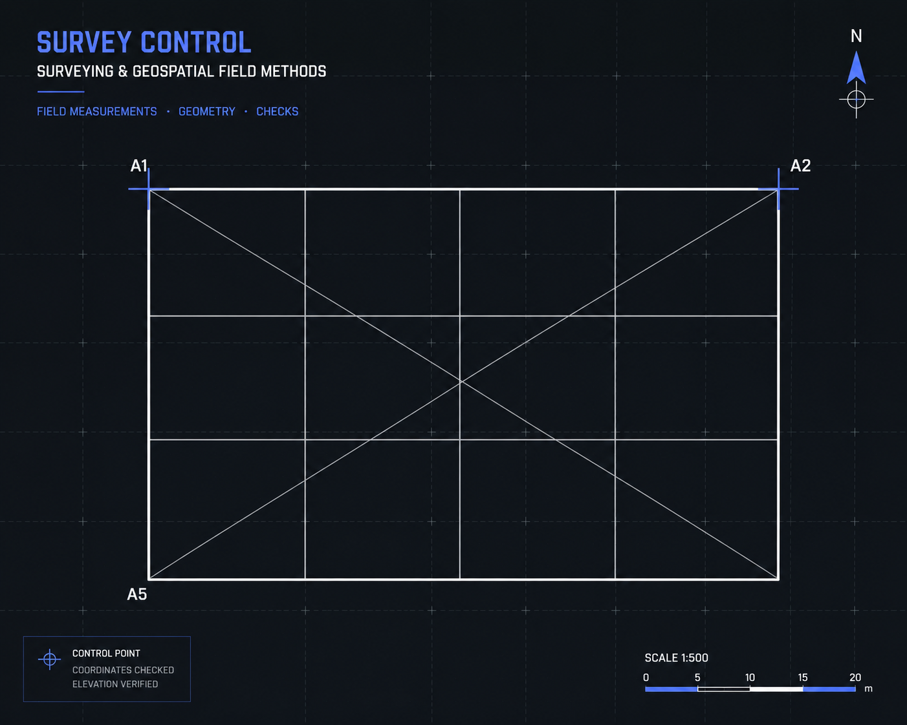
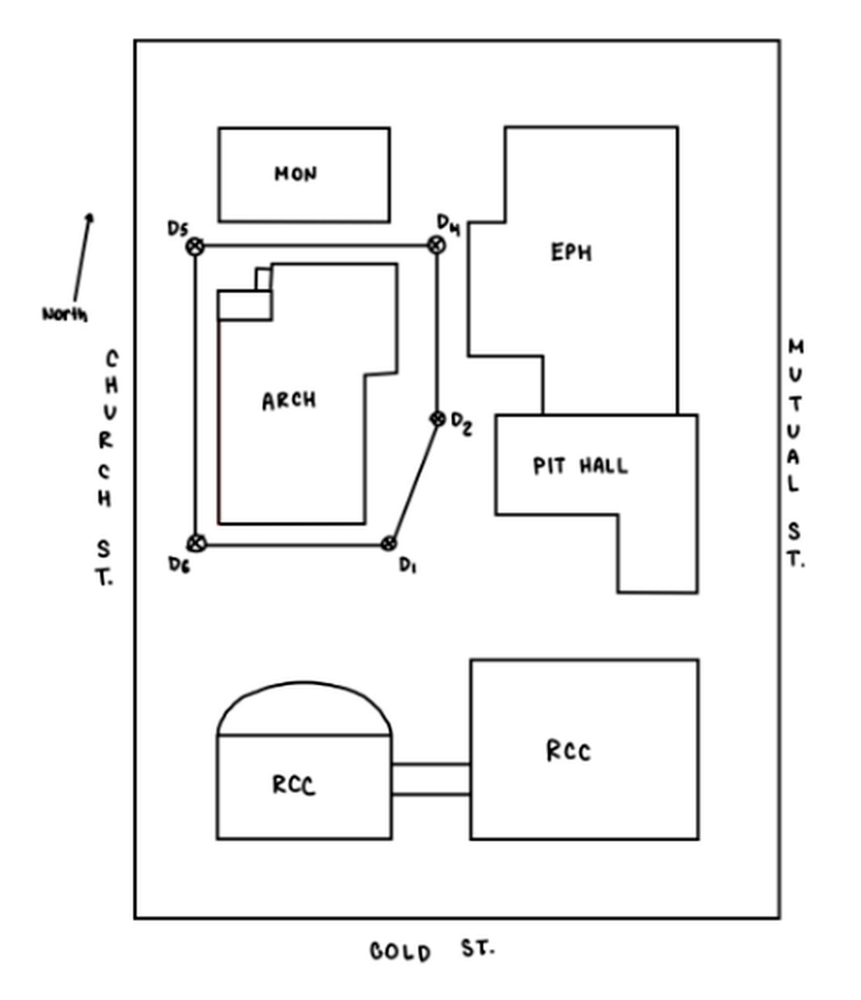
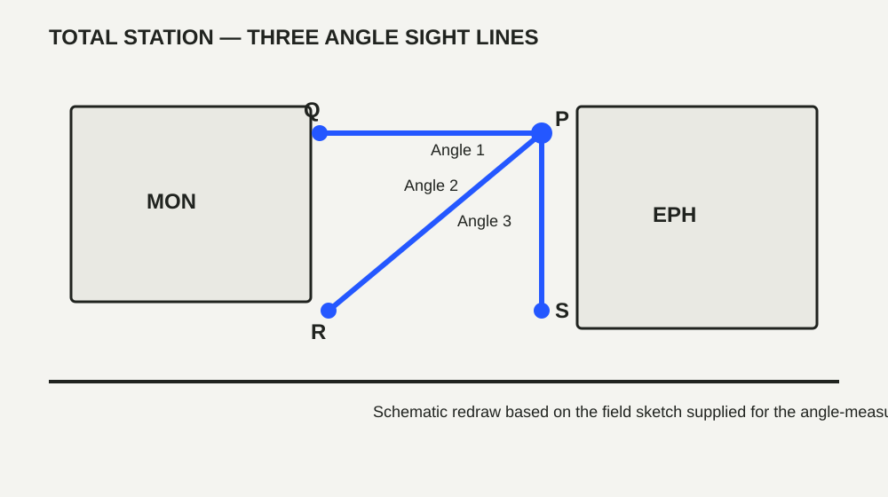
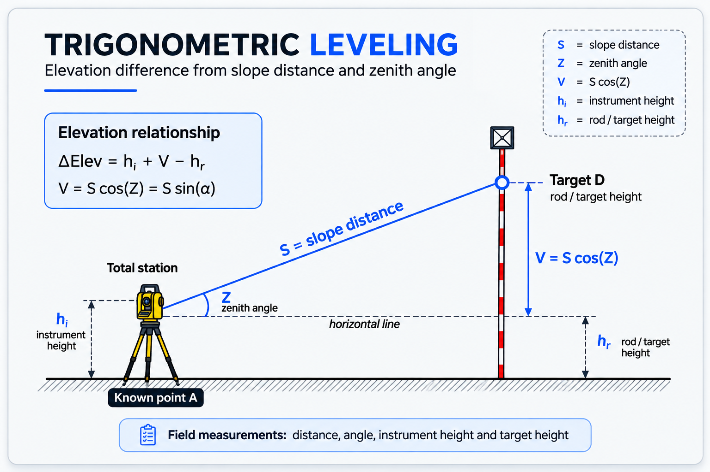

Total Station
Horizontal directions, zenith angles, distances, and trigonometric leveling.
CVL323 · FUNDAMENTALS OF SURVEYING · FALL 2025
A field-based surveying project involving leveling, total-station observations, elevation determination, measurement-error analysis, and closed-traverse calculations.

Survey-control graphic · field measurements · geometric control
PROJECT OVERVIEW
This project brought together the surveying techniques developed throughout CVL323. The work included differential leveling, measurement-error analysis, total-station angle observations, trigonometric leveling, and closed-traverse calculations.
I served as the field leader for a six-person team and was responsible for the project's calculations and data processing, connecting the team's raw field observations to the final checked results.
TOOLS & EQUIPMENT
Horizontal directions, zenith angles, distances, and trigonometric leveling.
Differential leveling, backsight/foresight readings, and elevation checks.
Tripod, level rods, target rod, measuring tape, chalk, and field notes.
Data organization, calculations, averages, error checks, and result tables.
01 · FIELD SITE

The field work was carried out around the assigned survey area near the Architecture Building. The survey network connected multiple control points and allowed the team to collect the observations needed for leveling, angle measurement, trigonometric leveling, and traverse calculations.
The survey was organized as a closed field exercise so that the measurements could be checked for consistency and adjusted when necessary.
02 · LEVELING — PART ONE
The automatic level was mounted securely on the tripod and leveled so that the line of sight was horizontal.
The leveling staff was placed on a point with a known elevation, or benchmark. The staff reading was recorded as the backsight and used to establish the instrument height.
The staff was moved to the next point, or turning point. The reading taken from the same horizontal line of sight was recorded as the foresight.
The difference in elevation between the two points was determined from the backsight and foresight readings.
03 · DIFFERENTIAL LEVELING
A closed leveling loop was used to compare the starting and ending benchmark elevations. The measurements were processed into elevations, checked for misclosure, compared with the permissible closure, and adjusted where required.
This part of the work demonstrated that field measurements need a quality check before they are used as final engineering values.
Elevations were adjusted using proportional correction after the closure check.
04 · ANGLE MEASUREMENT
The total station was set up at survey stations and used to observe horizontal directions to target points. Direct and reverse observations were recorded so the readings could be checked and averaged.

05 · TRIGONOMETRIC LEVELING
Trigonometric leveling used the total station to combine measured distance, zenith angle, instrument height, and target height. The vertical component was determined from the observed slope distance and angle.

06 · CLOSED TRAVERSE
The traverse exercise extended the field measurements into coordinate control. The observations were processed through angular checks, azimuths, departures, latitudes, coordinates, and adjustment.
07 · SAMPLE CALCULATIONS
A cropped section of the calculation sheet is shown below so the field data is readable without excessive empty spreadsheet space.
ΔH = Backsight − Foresight
V = S cos(Z)
Misclosure → correction → adjusted coordinates
08 · MY CONTRIBUTION
I served as the field leader for a six-person surveying team. I was responsible for coordinating the field workflow, organizing the measurement sequence, helping the team maintain consistent instrument setup and observation procedures, and keeping the field work organized and efficient.
I was also responsible for all of the project's calculations and data processing. This included organizing raw field observations, processing direct and reverse total-station readings, calculating elevation differences, checking closure and misclosure, applying adjustments, and completing the traverse calculations involving angles, azimuths, departures, latitudes, and coordinates.
In practical terms, my role connected the field work to the final engineering results: I helped lead the six-person team in the field and was responsible for turning the team's measurements into organized, checked, and interpretable calculations.
09 · KEY TAKEAWAYS
Practical total-station and automatic-level setup
Field data collection and organized field notes
Elevation and coordinate calculations
Measurement-error and closure analysis
Traverse adjustment and coordinate control
Team leadership in a field environment